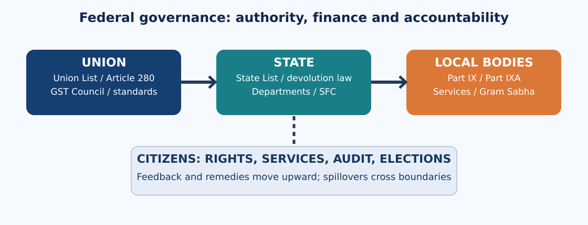
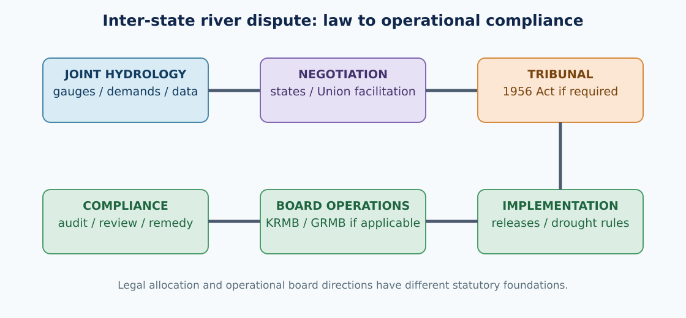

Syllabus map and topic summary
Paper: III — Indian Society, Constitution and Governance. Unit: II — Constitution of India. Topic: 5.
Syllabus wording (Notification No. 02/2024, Annexure-II): “Federal system: Centre-State Relations- Issues and Challenges pertaining to the Federal Structure; Local Self-Government 73rd and 74th Constitutional Amendments for sharing of powers - Panchayat Raj and Municipal Institutions; Resolution of Inter- State disputes with reference to Water Disputes- Challenges of Implementation.”
Source verification: This line has been checked against published reproductions of Notification 02/2024 and the official examination pattern. The primary notification PDF was not successfully downloaded in this run; therefore the wording is cross-checked, not independently extracted from a fresh official PDF. No unverified official previous-year question is claimed.
Syllabus-to-chapter map
| Syllabus demand | Detailed chapters | What the examiner expects |
|---|---|---|
| Federal structure and its challenges | 1, 5, 11 | Federal versus centralizing features; basic structure; institutional safeguards; Telangana |
| Legislative Centre–State relations | 2 | Articles 245–255, Lists, Articles 249–253, repugnancy |
| Administrative relations | 3 | Articles 256–263, All India Services, Governors, consultation |
| Fiscal and cooperative federalism | 4, 5 | Article 280, GST Council, grants, fiscal dependence |
| 73rd Amendment and Panchayati Raj | 6, 8 | Part IX, Eleventh Schedule, Gram Sabha, reservations, three Fs |
| 74th Amendment and municipal institutions | 7, 8 | Part IXA, Twelfth Schedule, planning committees, Hyderabad |
| Interstate water disputes and implementation | 9, 10 | Article 262, 1956 Act, tribunals, KRMB/GRMB, Krishna and Godavari |
Topic summary
Indian federalism balances constitutional autonomy for states with a strong Union. Legislative power is divided by the Seventh Schedule, but special constitutional provisions permit Union action on certain state subjects. Administrative directions, All India Services, fiscal transfers and the GST Council link the tiers. Federalism's quality depends on meaningful consultation and predictable resources, not merely formal divisions. The 73rd and 74th Amendments constitutionally recognize rural and urban local government, yet actual devolution depends on state laws, finances and personnel. Telangana's Panchayat Raj Act, 2018 and Municipalities Act, 2019 provide concrete institutional examples. Interstate water disputes expose the limits of legal awards without shared measurement, operational rules and political cooperation. The Krishna and Godavari River Management Boards, established under the Andhra Pradesh Reorganisation Act, 2014, illustrate specialized coordination after state bifurcation. Strong answers distinguish constitutional authority, statutory machinery, implementation capacity and citizen outcomes.
Learning objectives
After studying the chapter, a candidate should be able to distinguish federal autonomy from sovereignty; apply the Seventh Schedule and Articles 249–254 to a hypothetical conflict; explain vertical and horizontal fiscal imbalance; compare Part IX with Part IXA; distinguish the Gram Sabha from a Gram Panchayat; identify what the Eleventh and Twelfth Schedules do not automatically devolve; distinguish tribunal adjudication from river-board operations; and frame a balanced Telangana-specific answer with legal, technical and equity dimensions.
Detailed Textbook Notes — Federal System, Centre–State Relations, Local Self-Government and Water Disputes
1. The constitutional logic of Indian federalism: unity, autonomy and asymmetry
Federalism is a distribution of authority, not simply two layers of offices
A federation constitutionally allocates public power between a general government and territorial governments. Neither can ordinarily abolish the other by a routine executive instruction. India's Constitution combines this idea with a strong Union designed in the shadow of Partition, princely-state integration and uneven regional development. Article 1 calls India a 'Union of States'; Articles 245–255 and the Seventh Schedule divide legislative competence; Part XI structures legislative and administrative relations; Part XII regulates public finance; and an independent judiciary decides constitutional controversies. The Rajya Sabha provides a territorial chamber, although its seats are not distributed equally among states. These features make India a federation, not merely an administratively decentralized unitary state.
The Union's strength is equally real. Parliament can alter state boundaries and names under Article 3 after referring the proposal to the concerned state legislature for its views; that legislature's consent is not constitutionally required. Residuary legislative power lies with Parliament under Article 248 and Union List Entry 97. The Union has special legislative routes in the national interest (Article 249), during emergencies (Article 250), on states' requests (Article 252), and to implement international obligations (Article 253). Article 356 permits President's Rule under constitutional conditions, subject to judicial scrutiny. The Constitution thus resists a binary description as either 'pure federation' or 'unitary state'.
Federal, unitary and asymmetric elements
Federal safeguards include elected state legislatures, an enumerated State List, constitutional courts, state representation in the Council of States, and ratification by at least half the state legislatures for certain federal amendments under Article 368. Unitary or centralizing elements include a single Constitution for the Union and most states, single citizenship, All India Services, a unified judicial hierarchy, emergency powers and an integrated fiscal system. 'Asymmetrical federalism' means that constitutionally recognized arrangements need not be identical everywhere: Fifth and Sixth Schedule protections, special provisions under Articles 371 and following, and differentiated arrangements for Union territories reflect distinct histories and needs. Asymmetry can protect diversity but can also generate debates about equal treatment and democratic control.
The Supreme Court in S.R. Bommai v. Union of India (1994) treated federalism as part of the Constitution's basic structure and limited arbitrary use of Article 356. In State of West Bengal v. Union of India (1963), the Court rejected the proposition that Indian states possess sovereignty in the classical sense. These decisions are complementary: states are not sovereign nations, yet their constitutional sphere cannot be treated as an executive favour. In a mains answer, explain the precise level at which autonomy is protected—constitutional competence, not an unconditional veto over national policy.
Telangana as a federal case study
The Andhra Pradesh Reorganisation Act, 2014 illustrates both the Union's legal capacity to reorganize states and the political importance of regional aspirations. Telangana's formation did not settle every intergovernmental question: common institutional legacies, public assets, administrative arrangements, and Krishna–Godavari river management demanded further coordination. A state can gain political self-government yet remain dependent on Union transfers, interstate negotiations and centrally created boards. The example is more analytically useful than simply calling the reorganisation either a federal victory or a central imposition.
Competing interpretations and consequences
One school argues that a strong Union protects national security, macroeconomic stability, mobility and minimum social standards; another warns that concentrated fiscal and administrative power undermines local experimentation and makes elected states answerable for policies they cannot adequately shape. Both concerns are genuine. The practical test is whether decisions are taken at the lowest level capable of delivering them, while spillovers and national public goods are coordinated at higher levels. A strong answer should assess institutional safeguards, actual fiscal discretion, consultation quality and citizen outcomes rather than treating constitutional labels as self-explanatory.
Exam trap: Article 1's 'Union of States' does not mean states are mere departments; equally, federalism as basic structure does not give a state a constitutional right to secede.
2. Legislative relations: the Seventh Schedule, supremacy and constitutional exceptions
Ordinary division of legislative fields
Article 246, read with the Seventh Schedule, distinguishes Union List, State List and Concurrent List. Union subjects include defence, foreign affairs, currency and inter-state trade-related fields; State subjects include public order, police, public health and agriculture subject to constitutional qualifications; concurrent fields include criminal law, marriage and divorce, education and forests. Article 246 establishes the ordinary hierarchy of legislative power; Article 246A creates a special concurrent framework for GST, with Parliament holding exclusive power over GST on interstate supplies. Avoid the false claim that all taxes now belong to the Union: states retain important own-source taxes and their share in GST arrangements.
Article 254 concerns repugnancy when valid Union and state laws conflict on Concurrent List subjects. Generally the parliamentary law prevails to the extent of inconsistency; a state law reserved for and receiving Presidential assent can prevail within that state, but Parliament can subsequently override it. This is not a blanket rule that any Union policy automatically invalidates every state statute. Courts first determine legislative competence, the true character or 'pith and substance' of the enactment, and whether an irreconcilable conflict actually exists. Incidental overlap is not necessarily fatal.
Routes for Parliament to legislate beyond the ordinary Union List
Article 249 allows Parliament to legislate on a State List matter when the Rajya Sabha passes the required national-interest resolution by a two-thirds majority of members present and voting; its operation is time-limited and renewable. Article 250 permits such legislation while a Proclamation of Emergency is in operation. Article 252 permits Parliament to legislate for two or more consenting states on a State List matter, with other states able to adopt it; participating states cannot simply amend the resulting parliamentary law on their own. Article 253 enables implementation of treaties and international agreements. Article 356 can change the legislative operating arrangement during President's Rule, but is not a general policy convenience.
These pathways answer a classic federal design problem: some subjects normally belong close to residents, but particular crises, interstate spillovers or coordinated commitments may require national action. Their safeguards differ. Article 249 uses a federal parliamentary chamber; Article 252 requires affirmative state resolutions; Article 253 draws legitimacy from international commitments; emergency provisions require constitutional triggers and oversight. Conflating the routes weakens an examination answer.
State autonomy and policy experimentation
State laws can adapt public health systems, policing priorities, agricultural marketing, land regulation and local-government arrangements to regional conditions. Telangana's Panchayat Raj Act, 2018 and Municipalities Act, 2019 demonstrate state legislative responsibility for institutions that the Constitution requires states to establish and empower. The national constitutional framework sets minimum institutional guarantees, while details of staffing, functions, local taxation and service standards depend heavily on state legislation and executive rules.
The benefit of diversity is experimentation: one state may invest in digital grievance systems, another in ward committees or local procurement. The risk is uneven protection, compliance costs across borders, and fragmentation when rivers, pollution or markets cross boundaries. The policy solution is not always to centralize the subject; model laws, intergovernmental councils, minimum standards, mutual recognition and conditional grants may preserve autonomy while reducing spillovers.
Judicial tests and analytical use
When assessing a disputed law, use a four-stage method. First identify the legislative field and relevant entry. Second ask whether special constitutional powers alter the ordinary allocation. Third test whether the law's dominant purpose fits its claimed field, allowing incidental overlap. Fourth, if both laws are valid and cover a Concurrent List matter, assess Article 254 repugnancy and any Presidential assent. Add constitutional rights and basic-structure constraints as a separate check. This structured method avoids the common mistake of beginning and ending with 'Union law always wins'.
Exam trap: 'Education' and 'forests' are Concurrent List subjects after the Forty-second Amendment; 'police' remains principally a State List subject.
3. Administrative relations: coordination, directions and constitutional friction
Administrative power follows—but is not identical to—legislative power
Articles 256 and 257 organize relations between Union and state executives. Article 256 obliges state executive action to ensure compliance with parliamentary laws and allows appropriate Union directions for that purpose. Article 257 requires states to exercise executive power without impeding Union executive power and permits specified directions, including on nationally significant communications and railway protection. Articles 258 and 258A allow certain entrustment of functions between governments. These are constitutional coordination devices; they are not a standing licence for the Union to take over the entire state administration.
The Union and states administer overlapping programmes through ministries, directorates, district collectors, technical agencies and local governments. A centrally sponsored scheme may prescribe objectives, eligibility or reporting while the state supplies personnel, land, implementation capacity and part of the financing. Responsibility can therefore be divided: the Union designs a transfer or standard, the state selects and supervises implementing machinery, and the panchayat or municipality encounters the citizen. When a service fails, accountability becomes blurred unless the programme identifies which tier controls funding, staff and remedies.
All India Services and the role of Governors
Article 312 provides the constitutional basis for creation of All India Services through a Rajya Sabha resolution and parliamentary law. IAS and IPS cadres support administrative continuity, national standards and mobility, but the division of cadre control can create tension over deputation, postings and political accountability. A civil servant should obey lawful instructions and remain accountable to constitutional norms rather than treat intergovernmental disputes as personal contests.
The Governor is a constitutional head appointed by the President, not an alternative elected government. Disputes about assent to state Bills, legislative sessions and constitutional discretion have become salient in federal relations. The Supreme Court's November 2025 Presidential Reference on assent clarified aspects of Articles 200 and 201 and cautioned against judicially imposing fixed timelines where the Constitution does not specify them. The answer should distinguish constitutional doctrine from partisan allegations and avoid claiming that a single judgment eliminates every possible delay or dispute.
Forums for consultation and conflict prevention
Article 263 enables an Inter-State Council for inquiry, discussion and recommendations on common interests; the Council was established in 1990. Zonal Councils under the States Reorganisation Act, 1956 offer another consultative forum; the North Eastern Council has a separate statutory basis. These forums are not courts and generally do not issue binding judgments. Their importance lies in early information exchange, technical compromise and political ownership. Interstate projects also use sectoral institutions such as river management boards.
Telangana's water negotiations show why executive coordination must be evidence-based. Reservoir release decisions affect drinking water, irrigation, hydropower and downstream ecology. Even when two states agree on a broad principle, engineers must share telemetry, forecast inflows and implement seasonal schedules. A state government may be legally entitled to participate but practically disadvantaged if measurement protocols are opaque or data arrive late.
Critical appraisal
Central directions can secure constitutional compliance and interstate coordination, yet excessive resort to them may hollow out elected state authority. State resistance may defend legitimate autonomy, but can also obstruct a national standard or neighbouring state's rights. Better administration requires transparent directions citing legal authority, time-bound consultation, publicly recorded minutes, interoperable data and accessible dispute escalation. Distinguish a disagreement over policy preference from an unlawful refusal to carry out binding law.
Exam trap: The Inter-State Council under Article 263 is not the same as a water-disputes tribunal under the 1956 Act, nor is it the GST Council under Article 279A.
4. Fiscal federalism: tax assignment, transfers, GST and accountability
Why the spending map and the revenue map differ
Many costly public services—schools, hospitals, agriculture extension, police, urban sanitation—are delivered by states or local bodies, while high-yield broad-based taxes are concentrated or shared at the Union level. This creates vertical fiscal imbalance. States also differ in income, population, geography and service needs, producing horizontal imbalance. Constitutional fiscal federalism seeks to fund national obligations without destroying the incentives for efficient state revenue collection or permitting large regional inequalities in essential services.
Articles 268–281 and related provisions address taxation, sharing and grants. Article 280 establishes the Finance Commission, which recommends distribution of the divisible pool between Union and states, allocation among states, grants-in-aid principles and measures to augment state funds for local bodies. Article 275 provides for grants-in-aid under parliamentary law; Article 282 allows discretionary grants for public purposes. The 'divisible pool' should not be equated with the Union's entire gross tax collection: constitutionally specified cesses and surcharges are not ordinarily shared through tax devolution, a recurring subject of state concern.
GST as cooperative—and sometimes contested—federalism
The Constitution (One Hundred and First Amendment) Act, 2016 created the GST architecture. Article 246A distributes GST legislative competence and Article 279A creates the GST Council, comprising Union and state finance representatives. The Council recommends rates, exemptions and other matters through a voting design in which the Union has one-third of the weighted vote and states collectively two-thirds; a decision requires at least three-fourths of weighted votes of members present and voting. This design encourages negotiation but gives the Union an effective blocking position and prevents states alone from passing a recommendation against Union opposition.
In Union of India v. Mohit Minerals (2022), the Supreme Court emphasized the persuasive character of GST Council recommendations in the constitutional scheme rather than treating every recommendation as automatically binding legislation. Do not confuse this with a claim that all GST Council decisions have no practical effect: governments commonly implement negotiated recommendations through applicable laws and notifications. The key analytical distinction is constitutional recommendation versus legal force of enacted measures.
Grants and the local-government finance chain
The Fifteenth Finance Commission recommended substantial local-government grants for 2021–26, often tied to drinking water and sanitation outcomes. The Sixteenth Finance Commission's published report provides the next analytical baseline; recommendations should be distinguished from actual releases and state-wise utilisation. A local body can have a constitutional existence but weak fiscal autonomy if its grants arrive late, it cannot set meaningful user charges, and it lacks engineers or accountants to spend effectively. State Finance Commissions under Articles 243I and 243Y examine local finances and recommend state-local sharing, but timely constitution, acceptance and action on reports are persistent issues.
Telangana implications and balanced evaluation
Telangana must finance expanding urban infrastructure, village sanitation, health and irrigation while participating in Union tax-sharing arrangements. A fast-growing urban region may generate substantial revenues yet need large investment in drains, waste management and transit. Rural and tribal areas may have low taxable capacity but high service-delivery costs. Equal per-capita grants may miss these differences; pure revenue-generation criteria can penalize poorer districts. An exam-quality proposal combines predictable formula transfers, need-based equalization, local own-source revenue, transparent accounting and outcome audits.
Exam trap: Finance Commission recommendations are not themselves the same as budgeted expenditure or money actually transferred. Cite the period and the stage of the process.
5. Cooperative, competitive and coercive federalism: institutions and limits
Three modes of intergovernmental behaviour
Cooperative federalism involves bargaining and joint problem-solving where no single government can deliver alone. Examples include GST Council negotiations, national disease surveillance, disaster response and shared river-basin management. Competitive federalism occurs when states seek investment, administrative innovation or better social outcomes and learn from each other's performance. Coercive federalism is a critical label used when the Union relies on fiscal leverage, conditions, agencies or exceptional powers to constrain state choices. These categories are interpretive, not mutually exclusive legal statuses: the same programme can encourage cooperation and contain coercive features.
Coordination failures and their distributional consequences
A state's policy choice may affect neighbours. An upstream reservoir affects downstream irrigation; a state's pollution control affects another state's river; migration transfers demand for housing and schools across borders. This is the 'spillover' rationale for coordination. But uniform national conditions can also impose disproportionate costs on drought-prone or rapidly urbanizing states. The correct question is who bears costs, who receives benefits and who controls the evidence used to decide. Consultation without credible data may simply disguise a bargaining imbalance.
For Telangana, Hyderabad's metropolitan growth illustrates multi-level spillovers: traffic, water supply, wastewater, flood plains and peri-urban land use cross municipal boundaries. A single ward committee cannot solve a metropolitan watershed problem, but a distant ministry cannot reliably manage every drain. Effective subsidiarity assigns neighborhood functions locally, metropolitan network functions to coordinated urban institutions, and inter-state or national externalities to higher-level agreements.
Institutional mechanisms
The Inter-State Council and Zonal Councils facilitate political discussion. The Finance Commission addresses tax sharing and grants; the GST Council negotiates indirect-tax design; NITI Aayog provides a policy platform without replacing constitutional fiscal bodies. Courts adjudicate legal disputes, but repeated litigation can be expensive and slow. River boards and technical committees may translate legal allocations into operational schedules. Parliamentary committees and state legislatures provide public scrutiny, while audit bodies trace whether funds were spent for their stated purposes.
An effective dispute-prevention model includes early warning, joint baseline data, written minutes, independent technical review, escalation rules and public disclosure of implementation. In water disputes, hydrological measurement and seasonal planning matter as much as constitutional doctrine. In fiscal disputes, transparent accounting of cesses, grants and conditionality matters as much as a speech about 'cooperation'.
Critique and exam synthesis
Celebrating every centrally sponsored scheme as cooperative ignores asymmetries in negotiation and financing. Conversely, calling every national standard coercive ignores legitimate collective-action problems. Competitive rankings can spur innovation but also encourage data gaming, neglect of unmeasured outcomes and unfair comparisons between differently endowed states. A nuanced answer asks whether participation was meaningful, funds were predictable, responsibilities were clear, rights were protected and independent evaluation existed.
Exam trap: 'Cooperative federalism' is a constitutional governance principle and analytical description; it is not a separate Fourth List in the Seventh Schedule.
6. The 73rd Amendment: Panchayati Raj, Gram Sabha and democratic decentralization
Constitutional transformation
The Constitution (Seventy-third Amendment) Act, 1992 inserted Part IX (Articles 243–243O) and the Eleventh Schedule; the principal provisions took effect in 1993. Before constitutionalisation, rural local bodies could be suspended, elections postponed and functions retained by state departments. Part IX gives institutional continuity through constitutionally prescribed elections and tenure, but does not itself transfer every listed subject automatically. The Eleventh Schedule identifies 29 potential areas—including agriculture, minor irrigation, rural housing, roads, health, drinking water and poverty alleviation—for devolution through state law.
Article 243A recognizes the Gram Sabha, comprising registered voters in a village-level panchayat area, and state law determines its powers and functions. Article 243B generally provides for village, intermediate and district panchayats, with a constitutional exception allowing states with populations not exceeding twenty lakh to omit the intermediate tier. Article 243C concerns composition; Article 243D reserves seats for SCs and STs in proportion to population and not less than one-third of directly elected seats for women, including within reserved categories, with provisions for chairpersons. States may provide higher women's reservation. Article 243E provides five-year duration and election rules after dissolution; Article 243K creates the State Election Commission's constitutional role.
Devolution is three linked decisions
'Functions, funds and functionaries' is a practical test. A panchayat may be nominally responsible for drinking water but lack authority to sanction repairs; it may receive a grant but not have a qualified engineer; or it may employ staff but depend on unpredictable releases. Article 243G permits state legislatures to endow panchayats with powers and responsibilities for economic development and social justice. Article 243H addresses taxation and funds; Article 243I mandates a State Finance Commission at prescribed intervals. Thus, constitutional recognition is a floor, not proof of operational autonomy.
The Gram Sabha can scrutinize village works, select priorities, demand social audits and reveal exclusion from schemes, depending on state law. Yet participation can be distorted by caste hierarchy, gendered speaking norms, elite capture, inconvenient meeting times or opaque budgets. Reservation changes the composition of representation, but empowerment also requires access to records, training and protection from proxy decision-making. A strong mains answer separates descriptive representation from effective authority.
Telangana implementation
The Telangana Panchayat Raj Act, 2018 (Act 5 of 2018) governs rural local institutions. Telangana's structure includes Gram Panchayats, Mandal Praja Parishads and Zilla Praja Parishads. Official district administration descriptions identify sanitation, street lighting, protected drinking water, village plantations and local development as practical responsibilities. Formation of separate Gram Panchayats for some tribal habitations and thandas can reduce travel and improve recognition, although very small units may face weak staffing and revenue bases. The Sixth Schedule's autonomous-district model should not be casually conflated with Telangana's ordinary Part IX panchayats; scheduled-area arrangements require attention to PESA, 1996 where applicable.
Accountability and reform
Reforms include activity mapping of the 29 subjects, untied predictable transfers, elected-body control over relevant staff, accessible Gram Sabha records, e-procurement with offline access, gender-sensitive meeting schedules and independent audits. Stronger panchayats can respond rapidly to broken streetlights or contaminated wells; weak panchayats become complaint counters forwarding requests to line departments. The normative goal is not maximum devolution regardless of capacity, but authority matched with finance, expertise and public accountability.
Exam trap: The Eleventh Schedule lists 29 matters; it does not itself transfer all 29 to every panchayat on the day the amendment came into force.
7. The 74th Amendment: urban local bodies, planning and the metropolitan governance gap
Municipal constitutional design
The Constitution (Seventy-fourth Amendment) Act, 1992 inserted Part IXA (Articles 243P–243ZG) and the Twelfth Schedule, broadly operational from 1993. Article 243Q envisages Nagar Panchayats for transitional areas, Municipal Councils for smaller urban areas and Municipal Corporations for larger urban areas, subject to constitutional exceptions. Article 243R addresses municipal composition; Article 243S provides for ward committees in municipalities with populations of three lakh or more; Article 243T establishes reservations; Article 243U provides a five-year term; and Article 243ZA vests municipal election supervision in the State Election Commission.
The Twelfth Schedule lists 18 possible municipal functions: urban planning, land-use regulation, roads, water supply, public health, sanitation, fire services, slum improvement, urban poverty alleviation, parks, street lighting, public conveniences, burial grounds and more. Article 243W allows state legislatures to endow municipalities with powers and responsibilities; Article 243X concerns municipal taxation; Article 243Y provides for State Finance Commission review. Again, the constitutional schedule is not an automatic assignment of every listed function to every municipality.
Why metropolitan problems exceed municipal borders
Urban watersheds, mobility networks, housing markets and solid-waste chains extend across local jurisdictions. Article 243ZD provides for District Planning Committees to consolidate panchayat and municipal plans, while Article 243ZE provides for Metropolitan Planning Committees in metropolitan areas as constitutionally defined. Their value depends on actual preparation of integrated plans and meaningful representation, not merely formal notification. Where development authorities, water boards, transport agencies and municipal corporations have overlapping mandates, residents may not know which institution is answerable for flooding or untreated sewage.
Hyderabad offers a concrete case. The Greater Hyderabad Municipal Corporation operates under its special governing law, while the Hyderabad Metropolitan Development Authority operates under the HMDA Act, 2008; surrounding municipalities and specialized utilities affect the same functional urban region. A drainage failure may result from encroached channels, poor solid-waste removal, road design and watershed changes outside a single ward. Merely enlarging a municipal boundary does not automatically align planning, budgets and accountability.
Telangana law and municipal finance
The Telangana Municipalities Act, 2019 (Act 11 of 2019) governs many urban local bodies; Hyderabad's municipal corporation has its own legislative framework. The Telangana Socio-Economic Outlook 2024 reported 13 municipal corporations and 129 municipalities at that time; such counts are time-specific and must not be represented as immutable 2026 figures. Municipal revenue can include property tax, user charges, fees and transfers. A city with high land values may still under-collect property tax or lack reliable asset registers, undermining routine operation and maintenance.
Reform choices and trade-offs
Ward committees can improve local feedback, but they cannot replace regional transport and watershed planning. Metropolitan authorities can coordinate infrastructure, but may weaken elected municipal accountability if they dominate decision-making without democratic oversight. Effective reform integrates municipal plans, transparent utility service standards, ring-fenced maintenance budgets, fair user charges with safeguards for poorer households, public disclosure of capital projects and functional metropolitan planning. The relevant test is whether residents can identify a responsible decision-maker and obtain a remedy.
Exam trap: The 74th Amendment's Twelfth Schedule contains 18 matters, not 29; ward committees are specifically linked to the population threshold in Article 243S.
8. Decentralization's unfinished agenda: elections, reservation, money and administrative capacity
Constitutional bodies are necessary but not sufficient
The 73rd and 74th Amendments protect regular local elections, representation, planning and fiscal-review institutions. They do not erase the state's responsibility to enact detailed laws and transfer workable powers. A local body may be democratically elected but administratively dependent on a state-appointed commissioner or district official. The constitutional status of the State Election Commission under Articles 243K and 243ZA is important because local elections should not become discretionary rewards from a state executive. Electoral boundaries, reservations, staffing and litigation can nevertheless complicate timely polls.
Reservations for SCs, STs and women create pathways into decision-making. Their effectiveness depends on agenda-setting power, access to financial information, safety, training and freedom from coercive proxies. The Supreme Court's jurisprudence on local reservations distinguishes constitutionally mandated SC/ST reservation from the conditions for some other forms of political reservation. Avoid importing the rules for educational or employment reservations directly into panchayat elections.
The 'three Fs' and the fourth: information
Functions identify what an institution must deliver; funds identify the resources it controls; functionaries determine whether it has operational capacity. A fourth 'F'—facts or information—has become central: without cadastral maps, water-quality tests, expenditure ledgers and grievance data, even a formally empowered local government cannot prioritize intelligently. However, digital dashboards can conceal exclusion if people without connectivity or literacy cannot correct records. Offline grievance channels and local-language disclosure are essential.
State Finance Commissions should be constituted and their recommendations acted upon with publicly explained decisions. Own-source revenue matters because an institution wholly dependent on grants has limited discretion. Yet aggressive user fees can exclude poorer households from water and sanitation. A defensible design combines progressive property taxation, targeted fee waivers, reliable transfers and public audit. Grants tied to sanitation outcomes can create incentives, but performance measures must not reward fabricated completion reports or penalize villages with objectively higher costs.
Telangana service-delivery illustration
Consider a Gram Panchayat receiving complaints about contaminated water. It needs legal authority to act, test results from a competent laboratory, a budget for repairs, a technical employee or accessible district engineering team, and an accountable procurement process. If any link fails, the elected sarpanch may be blamed without possessing the remedy. In an urban municipality, the analogous challenge could be a flooded underpass involving road engineering, drains and a metropolitan utility. These cases show why a simple count of elected bodies is a poor measure of devolution quality.
Balanced reform agenda
Central and state governments should define minimum rights and technical standards while leaving genuine local discretion over priorities. Local bodies need predictable formula grants, audited accounts, staffing pools, training for elected representatives and inclusive public hearings. Larger metropolitan infrastructure may require regional institutions, but those institutions should publish plans and report to elected representatives. The central question for a mains answer is not whether local government is constitutionally recognized—it is—but whether it has meaningful authority and accountable capacity to deliver services.
Exam trap: A State Finance Commission is a state-level constitutional mechanism; it is not a branch office of the Union Finance Commission.
9. Interstate water disputes: Article 262, tribunals and implementation barriers
Legal framework and its limits
Water is often described as a state subject, but the constitutional arrangement is more precise. State List Entry 17 covers water supplies, irrigation, canals, drainage, embankments, water storage and water power, subject to Union List Entry 56 concerning regulation and development of interstate rivers and river valleys where Parliament declares Union control expedient in the public interest. Article 262 permits Parliament to provide for adjudication of interstate river disputes and to exclude jurisdiction of the Supreme Court and other courts over such disputes as specified by law. Parliament enacted the Inter-State River Water Disputes Act, 1956 and the River Boards Act, 1956; the latter has not yielded a robust general basin-board system.
Under the 1956 disputes statute, a state government can request adjudication, and the Union may constitute a tribunal if negotiation does not settle the dispute. The statutory framework includes tribunal reports and decisions, publication and mechanisms connected to implementation. Section 11 restricts ordinary court jurisdiction in respect of disputes referred to a tribunal; this must not be oversimplified as saying the Supreme Court can never consider any constitutional or implementation-related issue touching a river. Jurisdictional boundaries depend on the statute, relief sought and constitutional powers.
Why a legal allocation does not equal delivered water
An award may specify entitlements, but actual flows fluctuate with monsoon variability, reservoir storage, upstream use, evaporation and changing demand. Hydropower operators prefer particular release schedules; irrigators need water at crop stages; cities need year-round drinking supply; environmental flows require minimum river health. A tribunal can settle a legal question yet leave implementation vulnerable to contested gauges, delayed data, new projects and political incentives to overdraw in dry years.
The design problem is therefore operational as well as judicial. A credible regime needs agreed measurement stations, real-time shared telemetry, seasonal drought-sharing rules, reservoir operating protocols, independent technical verification, public reporting and a dispute-escalation ladder. Without these, parties repeatedly litigate the same underlying uncertainty. The 2002 amendments sought to strengthen the statutory adjudication process, but delay and compliance difficulties have remained persistent concerns.
Distinguish the institutions
A water-disputes tribunal adjudicates under the 1956 Act; the Central Water Commission provides technical functions; the Union ministry exercises statutory responsibilities; river management boards under special legislation may regulate identified projects. The Inter-State Council is a general consultative forum, not a substitute for the tribunal. A tribunal award, a bilateral agreement, an administrative release order and a board's operational direction have different legal foundations. Precision about the institution prevents a common factual error in mains answers.
Equity, efficiency and ecological claims
Upstream states emphasize development opportunities and changing needs; downstream states emphasize historic use, dependence and reliability. A purely historic-use principle can freeze past inequality; a purely population-based principle may ignore crop patterns, investments and ecological limits. Climate change and groundwater depletion further complicate the allocation of surface water. A defensible framework combines legal entitlements, basic human needs, basin-wide efficiency, ecological protection, transparency and periodic technical review within the applicable legal regime.
Exam trap: Article 262 does not itself create a tribunal or allocate a fixed number of TMCs; Parliament's legislation and specific proceedings supply the institutional process.
10. Krishna and Godavari: Telangana's distinctive post-bifurcation water governance
Why state formation intensified allocation questions
Before June 2014, many Krishna and Godavari projects were planned or administered within undivided Andhra Pradesh. The creation of Telangana and the residuary Andhra Pradesh turned internal regional disputes into inter-state questions. The Andhra Pradesh Reorganisation Act, 2014 created a special governance framework for shared river systems, including an Apex Council under section 84 and Krishna and Godavari River Management Boards under section 85. The KRMB was constituted in May 2014 and is based in Hyderabad. The Act's Eleventh Schedule contains principles governing board operations, including the priority of drinking-water needs over irrigation where those demands conflict, and irrigation over power generation in specified conflicts.
KRMB's role and the limits of a board
The Krishna River Management Board regulates supply from notified projects to successor states with reference to tribunal awards and applicable arrangements, and performs specified monitoring and operational functions. Its jurisdiction was notified by the Union in July 2021, and implementation has involved detailed coordination. It is not accurate to call KRMB itself the Krishna Water Disputes Tribunal or to assume the Board can unilaterally rewrite a tribunal allocation. The Apex Council, chaired by the Union water-resources minister and including both Chief Ministers, provides a political supervisory forum; technical board decisions and adjudicatory proceedings remain distinct.
Water-security trade-offs in Telangana
Telangana's drought-prone areas, irrigation ambitions and Hyderabad-region drinking-water needs create competing demands. Andhra Pradesh emphasizes its own downstream irrigation and drinking-water requirements. Reservoirs such as Srisailam and Nagarjuna Sagar connect storage, power generation, irrigation and urban supply; releases at one point alter downstream options. A dispute framed solely as a percentage of water ignores when water is released, how it is measured and what happens during deficit years. Similarly, a new project may be technically useful yet require intergovernmental approval and ecological appraisal under the governing legal framework.
Why implementation remains difficult
Disputes persist when states disagree about historical allocations, the relevance of projects completed after earlier awards, measurement, deficit-sharing and board jurisdiction. Political leadership can face incentives to portray technical compromise as surrender. Courts and tribunals can clarify entitlements, but a daily reservoir operation needs agreed protocols, reliable data and officials who can act rapidly. Where a project crosses environmental or rehabilitation concerns, the federal question also implicates affected farmers, fishers and displaced communities—not only state capitals.
A practical resolution package
First, publish an agreed basin water account showing inflows, storage, releases, withdrawals and losses. Second, establish seasonal operating schedules with explicitly defined drought triggers. Third, require joint technical verification of meters and project data. Fourth, route disputed legal entitlements to the competent tribunal or court while using boards for operational coordination within their statutory authority. Fifth, integrate drinking-water protection, environmental flows and rehabilitation into project appraisal. Sixth, publish reasons for major release decisions and make them accessible in Telugu and other relevant languages. This is more realistic than promising that a single political meeting will permanently 'solve' a hydrological conflict.
Exam trap: Section 84 of the Reorganisation Act deals with the Apex Council; section 85 with the river management boards. Do not interchange these provisions.
11. Integrated reform: making multilevel federalism work for citizens
The constitutional problem is a chain of accountability
Federalism, decentralization and water governance are usually studied in separate chapters, but they meet in daily service delivery. A resident may depend on Union transfers, state rules, a district engineer, a municipal utility and an upstream state's reservoir releases for a single glass of safe drinking water. Each institution can claim that another tier caused failure. Constitutional design is therefore only the beginning: successful governance requires a transparent chain linking authority, resources, evidence, decision and remedy.
Match scale to function
Local street lighting, village sanitation and neighbourhood parks usually benefit from local knowledge and fast feedback. A citywide water network requires integrated utility planning. A metropolitan floodplain needs watershed-scale coordination. An interstate river needs basin-level institutions, legal allocations and joint hydrological information. National standards are justified for constitutional rights, public health minimums and shared environmental risks. Subsidiarity is not an argument that every decision must be local; it asks for the smallest level that can internalize the costs and benefits of a decision.
A feasible reform sequence
Begin with an inventory of functions actually exercised by each tier, rather than only those mentioned in schedules. Publish responsibility matrices and service standards. Link fiscal transfers to predictable formulas while preserving enough untied money for local priorities. Establish transparent procurement and audit systems; invest in technical cadres shared across small panchayats; and hold inclusive Gram Sabha and ward-level hearings. For interstate projects, standardize monitoring and dispute-escalation rules before crises occur. Parliamentary and legislative committees should examine whether intergovernmental bodies are producing implementable agreements rather than just communiqués.
Constitutional balance and democratic legitimacy
A strong Union can maintain minimum standards and support poorer regions, but must not erase elected state discretion. States can protect regional needs, but should not obstruct binding interstate duties. Local bodies deserve real powers, yet must be subject to audit, equality norms and accessible remedies. Water boards need technical independence, but their decisions require statutory legitimacy and public scrutiny. The central measure of success is whether citizens receive services without losing the ability to identify and question those responsible.
Answer-writing synthesis
For a ten-mark question, begin with the constitutional provision, identify the institutional mechanism, demonstrate a Telangana application, acknowledge the competing interest, diagnose the implementation gap and close with a realistic reform. Avoid treating every dispute as proof that federalism has failed; disagreement is normal in a federation. Failure occurs when constitutional channels cannot turn disagreement into legitimate, evidence-based and implementable decisions.
Exam trap: 'Devolution' is not synonymous with 'delegation'. Devolution gives legally protected decision space to elected institutions; delegation can remain revocable administrative assignment.
Visual learning and comparison charts
Diagram A — Indian multilevel constitutional governance
Union (Union List; national standards; Finance Commission; GST Council) → State (State List; departments; devolution laws; State Finance Commission) → Elected local government (Panchayats under Part IX; Municipalities under Part IXA) → Citizen services and accountability. Feedback flows upward through elections, Gram Sabhas, ward committees, audits and courts. Spillovers flow sideways across state boundaries, requiring councils, boards and tribunals.
Diagram B — Interstate water governance
Negotiation and joint hydrology → request under Inter-State River Water Disputes Act → tribunal adjudication when statutory conditions are met → notified decision / implementation mechanisms → monitored reservoir operation → compliance review and further lawful resolution. In the Telangana/AP special framework, the Apex Council and KRMB/GRMB perform statutory coordination roles; they do not substitute for a tribunal's adjudicatory jurisdiction.
Comparison: authority versus instrument
| Problem | Constitutional/statutory route | Decision type | Implementation bottleneck |
|---|---|---|---|
| Overlap of Union and State laws | Arts. 246, 254 | Judicial competence/repugnancy assessment | Conflicting rules and uncertainty |
| State revenue shortfall | Art. 280 and grants framework | Recommended formula and budget releases | Timing, tied conditions, local capacity |
| Village sanitation | Part IX + Telangana Panchayat Raj Act | Local planning and service delivery | Staffing, revenue and audit |
| Urban flooding | Part IXA + municipal and metropolitan law | Municipal/metropolitan planning | Fragmented jurisdiction |
| Krishna reservoir releases | Art. 262, 1956 Act, AP Reorganisation Act | Tribunal rights + board operation | Data, drought sharing, political compliance |
Case matrix: Telangana
| Setting | Institutional actor | Competing interests | Defensible reform |
|---|---|---|---|
| Tribal habitation becomes Gram Panchayat | State government, SEC, elected panchayat | Local voice versus administrative scale | Shared technical cadre and transparent village budgets |
| Hyderabad stormwater drain | GHMC, planning authority, utilities | Ward responsiveness versus basin-scale works | Integrated watershed plan with elected oversight |
| Krishna dry-season release | Telangana, Andhra Pradesh, KRMB, Union | Drinking water, irrigation, power, ecology | Agreed telemetry, drought trigger and public release log |
| Rural drinking-water repair | Panchayat, district engineers, state department | Local responsibility versus staff control | Function–fund–functionary responsibility map |
Standalone quick revision — Federal System
90-second recall
India is a constitutionally structured federation with a strong Union. Article 1 says 'Union of States'; Article 246 plus the Seventh Schedule distributes legislative fields; Article 246A provides special GST competence. Article 254 governs Concurrent List repugnancy. Article 263 enables the Inter-State Council; Article 280 provides for the Finance Commission; Article 279A provides for the GST Council. Federalism is part of the basic structure (S.R. Bommai, 1994). States lack a unilateral right to secede.
Constitutional memory grid
| Provision | Examination cue |
|---|---|
| Arts. 245–246 | Territorial reach and Union/State/Concurrent legislative powers |
| Art. 246A | Special GST legislative power |
| Art. 248 | Residuary parliamentary legislative power |
| Art. 249 | Rajya Sabha national-interest route to State List |
| Art. 250 | Parliamentary State List power during Emergency |
| Art. 252 | Two or more states request parliamentary law |
| Art. 253 | Implementing treaties and international agreements |
| Art. 254 | Concurrent List repugnancy and Presidential assent exception |
| Arts. 256–257 | State compliance and Union directions |
| Art. 262 | Parliamentary law on interstate water disputes and court-jurisdiction exclusion |
| Art. 263 | Inter-State Council |
| Art. 279A | GST Council |
| Art. 280 | Finance Commission |
| Arts. 243–243O | Part IX — Panchayats |
| Arts. 243P–243ZG | Part IXA — Municipalities |
| Art. 243K / 243ZA | State Election Commission, rural / urban |
| Art. 243I / 243Y | State Finance Commission, rural / urban |
| Art. 243ZD / 243ZE | District / Metropolitan Planning Committee |
Panchayat versus municipality
| Criterion | 73rd Amendment | 74th Amendment |
|---|---|---|
| Constitutional part | IX | IXA |
| Schedule | Eleventh: 29 potential subjects | Twelfth: 18 potential subjects |
| Democratic base | Gram Sabha and elected panchayats | Municipal council/corporation and ward committees |
| Institutions | Village/intermediate/district generally | Nagar Panchayat, Municipal Council, Municipal Corporation |
| State law example | Telangana Panchayat Raj Act, 2018 | Telangana Municipalities Act, 2019 |
| Major gap | Staff, finances, Gram Sabha voice | Fragmented metropolitan agencies and weak municipal revenue |
Water-dispute decision chain
- Determine interstate river and competing uses; distinguish State List Entry 17 from Union List Entry 56.
- Identify negotiation, applicable agreement and tribunal proceedings under the 1956 Act.
- Identify whether the question is legal allocation, operational release or project approval.
- For Telangana/AP, apply Andhra Pradesh Reorganisation Act, 2014: Apex Council (section 84); KRMB/GRMB (section 85).
- Check evidence: gauges, reservoir levels, inflows, drought rules, irrigation timing, drinking water and ecology.
- Recommend enforceable protocols and transparent data, not merely another committee.
Seven common mistakes to avoid
- Article 262 is not itself a tribunal award.
- KRMB is a river management board, not a water-disputes tribunal.
- The Eleventh and Twelfth Schedules list possible functions; transfer requires state law and action.
- The Finance Commission is distinct from a State Finance Commission.
- GST Council recommendations are not automatically equivalent to enacted law.
- The Inter-State Council does not replace the judiciary or a water tribunal.
- Telangana's 2024 local-body counts are historical observations, not necessarily today's counts.
One-minute mains structure
Introduction: constitutional provision and problem. Mechanism: institution and legal rule. Telangana illustration: panchayat/municipal service or Krishna–Godavari board. Critical appraisal: competing claims, finance/data/implementation gap. Conclusion: actionable cooperative and accountable reform.
District and metropolitan planning: constitutional arithmetic
Article 243ZD sets a minimum of four-fifths elected membership for District Planning Committees, while Article 243ZE sets two-thirds for Metropolitan Planning Committees. For an illustrative 25-member DPC and a 30-member MPC, both minimums equal 20 members, but the eligible member pools and denominators differ. These are mathematical examples, not certified Telangana committee rosters.
A district plan consolidates panchayat and municipal plans. A metropolitan plan also considers local plans, shared water and infrastructure, government priorities and likely investments. The constitutional requirement to plan does not itself demonstrate that an implementing agency has received staff, budget or execution powers. Hyderabad flood-control proposals should be tested against catchment responsibility, published plans, budgets and measured outcomes. Official constitutional source: Legislative Department, Constitution of India, Articles 243ZD–243ZE (11 November 2025).
30 original MCQs with explanations
Classification: Original practice questions created for this chapter. Verified official PYQs: None. Each answer is explained so that incorrect alternatives become revision cues.
1. Which combination most accurately describes the Indian constitutional federation? A. Sovereign states with a unilateral right of secession B. Constitutionally divided powers with a relatively strong Union C. Only administrative districts under the Union D. Equal representation of every state in Rajya Sabha
Answer: B. Articles 245–255 and the Seventh Schedule allocate legislative authority, while residuary powers, reorganisation and emergency provisions strengthen the Union. States are not sovereign countries and Rajya Sabha representation is not equal for all states.
2. Residuary legislative powers ordinarily belong to: A. Gram Sabha B. State Legislature C. Parliament D. Inter-State Council
Answer: C. Article 248 and Union List Entry 97 place residuary legislative competence with Parliament. This is a significant difference from some federations in which residual powers belong to constituent states.
3. Which Article permits Parliament to legislate on a State List subject following a national-interest resolution of the Rajya Sabha? A. 249 B. 252 C. 254 D. 280
Answer: A. Article 249 uses a Rajya Sabha resolution supported by two-thirds of members present and voting. Article 252 instead requires resolutions by two or more state legislatures.
4. Two states request Parliament to legislate on a State List matter. The relevant provision is: A. Article 250 B. Article 252 C. Article 262 D. Article 263
Answer: B. Article 252 is the consent-based legislative route. It differs from Article 250, which operates during a Proclamation of Emergency.
5. A conflict between a valid parliamentary law and a valid state law on a Concurrent List matter is principally examined under: A. Article 254 B. Article 243G C. Article 312 D. Article 368 alone
Answer: A. Article 254 concerns repugnancy, including a state-specific Presidential-assent exception. Competence and actual conflict must be analysed rather than assuming every difference is fatal.
6. Which statement about the GST Council is correct? A. It is constituted under Article 263 B. It is constituted under Article 279A C. Its membership excludes states D. It can amend the Constitution by recommendation
Answer: B. Article 279A establishes the GST Council with Union and state participation. It is separate from the Inter-State Council under Article 263 and cannot itself amend the Constitution.
7. In the GST Council's constitutional voting design, the Union's weighted vote is: A. One-quarter B. One-third C. One-half D. Two-thirds
Answer: B. The Union holds one-third and states collectively two-thirds of weighted votes; the decision threshold is three-fourths of weighted votes of members present and voting. This makes negotiated agreement structurally important.
8. The Finance Commission is established under: A. Article 280 B. Article 262 C. Article 243W D. Article 356
Answer: A. Article 280 governs the Finance Commission. Its recommendations concern tax distribution, grants and local-body resource augmentation, not direct control over municipal elections.
9. Which pairing is accurate? A. Article 263 — water tribunal B. Article 243I — State Finance Commission for panchayats C. Article 243K — GST Council D. Article 243ZE — village Gram Sabha
Answer: B. Article 243I concerns state-local fiscal review for panchayats. Article 263 enables the Inter-State Council; Article 243K concerns the State Election Commission; Article 243ZE concerns Metropolitan Planning Committees.
10. The Eleventh Schedule contains: A. 12 municipal matters B. 18 municipal matters C. 29 possible panchayat subjects D. 97 Union subjects fixed permanently
Answer: C. The Eleventh Schedule lists 29 areas that may be devolved through state legislation. It does not by itself automatically transfer all powers to every panchayat.
11. The Twelfth Schedule relates primarily to: A. Union taxation B. Municipal functions C. Emergency powers D. Treaty ratification
Answer: B. The Twelfth Schedule identifies 18 potential municipal responsibilities such as urban planning, sanitation and roads; state law operationalizes the allocation.
12. Which of the following is the direct participatory body of registered village voters? A. Gram Sabha B. Rajya Sabha C. Metropolitan Planning Committee D. Zonal Council
Answer: A. The Gram Sabha is not identical to the elected Gram Panchayat. Its powers depend on the Constitution and relevant state legislation.
13. A ward committee is constitutionally addressed by: A. Article 243S B. Article 249 C. Article 262 D. Article 280
Answer: A. Article 243S addresses ward committees in municipalities with a population of three lakh or more, subject to detailed state law.
14. Which pair correctly identifies planning institutions? A. 243ZD — Metropolitan; 243ZE — District B. 243ZD — District; 243ZE — Metropolitan C. 243K — District; 243ZA — Metropolitan D. 263 — District; 280 — Metropolitan
Answer: B. District Planning Committees consolidate district plans under Article 243ZD, while Article 243ZE addresses Metropolitan Planning Committees.
15. The constitutional supervisor of panchayat elections is the: A. Union Finance Commission B. State Election Commission C. Inter-State Council D. River Management Board
Answer: B. Article 243K vests superintendence, direction and control of panchayat elections in the State Election Commission. Urban elections are addressed by Article 243ZA.
16. Which Telangana law primarily governs its rural panchayat structure? A. Telangana Panchayat Raj Act, 2018 B. Inter-State River Water Disputes Act, 1956 C. GST Compensation Act D. River Boards Act, 1956
Answer: A. The Telangana Panchayat Raj Act, 2018 provides the state statutory framework for Gram Panchayats, Mandal Praja Parishads and Zilla Praja Parishads.
17. Which state law governs many Telangana municipalities? A. Telangana Municipalities Act, 2019 B. Telangana Panchayat Raj Act, 2018 alone C. Andhra Pradesh Reorganisation Act, 2014 alone D. Indian Forest Act, 1927
Answer: A. The Telangana Municipalities Act, 2019 is a principal statute for many municipalities. GHMC has a separate municipal legislative framework.
18. Article 262 is primarily concerned with: A. GST voting B. Interstate river water disputes C. Panchayat elections D. Legislative privileges
Answer: B. Article 262 empowers Parliament to legislate on adjudication of interstate water disputes and related court-jurisdiction exclusion; it does not itself issue an allocation award.
19. Which is the principal statute providing a tribunal route for interstate river disputes? A. Inter-State River Water Disputes Act, 1956 B. Municipalities Act, 2019 C. Representation of the People Act, 1951 D. Forest Rights Act, 2006
Answer: A. The 1956 Act provides a statutory adjudicatory process. The River Boards Act, 1956 is a distinct statute and must not be confused with tribunal adjudication.
20. Under the Andhra Pradesh Reorganisation Act, 2014, the Apex Council is principally provided for in: A. Section 84 B. Section 85 C. Article 243G D. Article 280
Answer: A. Section 84 provides for the Apex Council; section 85 deals with the Krishna and Godavari River Management Boards.
21. KRMB is best described as: A. A Supreme Court bench B. A tribunal issuing original interstate allocation awards C. A statutory river-management board for notified operations D. A municipal utility
Answer: C. KRMB performs regulatory and operational functions under the 2014 Reorganisation Act. Its mandate is not interchangeable with that of a water-disputes tribunal.
22. In the Andhra Pradesh Reorganisation Act's river-board principles, a conflict between drinking-water and irrigation demand gives priority to: A. Hydropower B. Drinking water C. Navigation D. Whichever state is upstream
Answer: B. The Act's Eleventh Schedule gives drinking-water demand priority over irrigation in the specified conflict and irrigation priority over power generation in another specified conflict.
23. Which is the strongest evidence of genuine local devolution? A. A municipality appears on a map B. Local officials can only forward complaints C. Elected bodies control functions, resources and accountable staff D. The state issues more circulars
Answer: C. The 'three Fs'—functions, funds and functionaries—test operational power. Formal elections without resources do not guarantee effective local self-government.
24. Which issue most directly illustrates metropolitan coordination failure? A. A national defence treaty B. Flooding caused by drainage and land-use decisions across multiple urban agencies C. Appointment of a Supreme Court judge D. A single-household property dispute
Answer: B. Urban flooding crosses ward, municipal and utility boundaries. It requires watershed-scale planning with accountable metropolitan and local institutions.
25. Which proposal most directly improves implementation of an interstate water award? A. Rely only on political speeches B. Eliminate measurement stations C. Joint telemetry, drought rules and verified release logs D. Treat every reservoir as a separate sovereign state
Answer: C. Water entitlements require operational evidence and compliance. Shared gauges, transparent releases and drought protocols reduce uncertainty and the temptation to relitigate disputed facts.
26. For a District Planning Committee with 25 members, what is the minimum number who must be elected from the constitutionally specified local-body membership pool under Article 243ZD? A. 10 B. 15 C. 18 D. 20
Answer: D. Article 243ZD(2)(b) requires at least four-fifths: 25 × 4/5 = 20. A (10) is only 40%; B (15) is 60%; C (18) is 72%, all below the constitutional minimum. The eligible pool is elected district-level panchayat and municipal members; this is illustrative arithmetic, not a Telangana committee roster.
27. Under Article 243ZE, the minimum elected share of a Metropolitan Planning Committee must be: A. One-half of the members B. Three-fourths of the members C. Two-thirds of the members D. All members without exception
Answer: C. Article 243ZE(2)(b) specifies at least two-thirds elected from municipal elected members and panchayat chairpersons in the metropolitan area. A understates the floor; B wrongly imports a higher fraction; D mistakes a minimum elected share for a requirement that every seat be elected.
28. Which body reviews municipal finances under Article 243Y? A. The Union Finance Commission alone under Article 280 B. The Inter-State Council under Article 263 C. The GST Council under Article 279A D. The State Finance Commission constituted under Article 243I
Answer: D. Article 243Y expressly extends the review by the Finance Commission constituted under Article 243I to municipalities. A confuses a Union constitutional commission with this State-level review; B concerns interstate consultation; C concerns GST and does not conduct the Article 243Y municipal-finance review.
29. Which statement accurately describes removal protection for a State Election Commissioner under Article 243K(2)? A. The Governor may remove the Commissioner at pleasure B. A simple majority resolution of the State Assembly always suffices C. Removal is only in like manner and on like grounds as a High Court judge D. The Union Finance Commission must approve removal
Answer: C. The proviso to Article 243K(2) protects the Commissioner through the High Court judge removal standard. A incorrectly treats the appointment authority as having unrestricted removal power; B replaces the constitutional safeguard with a simple-majority shortcut; D assigns a role to an unrelated institution.
30. When preparing a metropolitan draft development plan under Article 243ZE(3), which set of inputs must be considered? A. Only the Union government's five-year expenditure statement B. Only decisions of an interstate river-water tribunal C. Only municipal election results and ward boundaries D. Municipal and panchayat plans, shared infrastructure and water concerns, government priorities and likely investments
Answer: D. Article 243ZE(3) expressly identifies local plans, common interests including water and infrastructure, Union and State priorities, and likely investments. A omits local planning and other required factors; B confuses metropolitan planning with river adjudication; C omits substantive planning and resources.
Original mains practice — structured model answers
These are newly written practice questions, not official previous-year questions. The answer bodies target approximately 200–250 words each; headings are included for examiner-friendly structure.
Q1. 'India is federal in form but centrally weighted in operation.' Critically examine with reference to Telangana.
Introduction / constitutional background
India distributes legislative authority between Union and states through Article 246 and the Seventh Schedule, while an independent judiciary protects the constitutional division. Yet the Constitution deliberately gives the Union significant coordinating and exceptional powers.
Reasons for central weight
Parliament holds residuary legislative competence under Article 248, can act on state subjects through Articles 249–253 under specified conditions, and can reorganize state boundaries under Article 3 after consultation rather than mandatory state consent. Integrated services and emergency provisions further strengthen national capacity.
Federal safeguards and Telangana evidence
Elected state legislatures, the State List, representation in the Rajya Sabha and special amendment ratification requirements protect autonomy. S.R. Bommai recognized federalism as a basic-structure feature. Telangana's creation in 2014 demonstrates the constitutional route for responding to regional demands. Subsequent Krishna–Godavari water management shows that political statehood still requires interstate institutions and negotiation.
Critical appraisal
A strong Union can preserve national standards and address spillovers. Excessive fiscal conditions or administrative directions, however, can make states accountable for decisions they cannot control. Conversely, state resistance may delay legally required cooperation.
Conclusion / way forward
The measure of healthy federalism is neither maximum centralization nor unqualified state autonomy. Transparent consultation, predictable fiscal transfers, respect for legislative competence and credible joint institutions are needed to convert constitutional balance into responsive government.
Q2. Explain the legislative and fiscal instruments that shape Centre–State relations. Are they sufficient for cooperative federalism?
Introduction / objective
The Constitution divides policy authority but also creates mechanisms to coordinate matters crossing state boundaries. Legislative competence and fiscal capacity must be studied together because a state may legally administer a service without possessing adequate resources.
Legislative architecture
Article 246 and the Seventh Schedule allocate Union, State and Concurrent subjects. Articles 249, 250, 252 and 253 permit parliamentary action on state matters through distinct constitutional routes. Article 254 addresses repugnancy on Concurrent List legislation, including the limited Presidential-assent exception. Article 246A provides a special GST framework.
Fiscal institutions and measures
Article 280 establishes the Finance Commission to recommend tax sharing and grants. Article 279A establishes the GST Council, where Union and states negotiate indirect-tax design. State Finance Commissions review the resource needs of panchayats and municipalities. Formula transfers and grants help address vertical and horizontal fiscal imbalance.
Critical appraisal
These mechanisms enable coordination, but their effectiveness depends on predictable releases, genuine consultation and clarity about conditional grants. The Supreme Court's Mohit Minerals decision distinguished GST Council recommendations from binding law. State concern over cesses, tied transfers and limited own-source revenue shows that formal institutions alone do not guarantee autonomy.
Conclusion
Cooperative federalism requires transparent fiscal data, timely transfers, enforceable constitutional limits and joint policy design. Institutional architecture is necessary; shared trust, accountability and implementation capacity make it effective.
Q3. Assess the achievements and unfinished agenda of the 73rd Constitutional Amendment with examples from Telangana.
Introduction / background
The 73rd Amendment inserted Part IX and the Eleventh Schedule, giving rural local democracy a constitutional foundation. Its purpose was to replace irregular, executive-dependent local bodies with representative institutions capable of planning and delivering village development.
Constitutional measures
Part IX provides for Gram Sabhas, elected panchayats, five-year tenure, reservations, the State Election Commission and periodic State Finance Commission review. The Eleventh Schedule lists 29 possible subjects. Article 243G allows state legislatures to endow panchayats with functions; the schedule does not itself transfer them automatically.
Telangana application
The Telangana Panchayat Raj Act, 2018 structures Gram Panchayats, Mandal Praja Parishads and Zilla Praja Parishads. Official district accounts describe sanitation, drinking water, street lighting and village development duties. New village panchayats for some tribal habitations can improve accessibility and representation.
Critical appraisal / root causes
The central weakness is incomplete devolution of functions, funds and functionaries. Small bodies may lack engineers, revenue and audit capacity. Gram Sabha participation may be weakened by caste inequalities, gendered barriers or poor disclosure. Reservation improves representation but cannot alone guarantee control over decisions.
Conclusion / practical reform
Publish activity maps, release predictable untied grants, strengthen technical staffing and make budgets accessible to Gram Sabhas. The amendment succeeds when elected representatives can actually resolve village problems and citizens can scrutinize their choices.
Q4. How does the 74th Amendment address urban governance, and why is metropolitan coordination still difficult in Hyderabad?
Introduction / constitutional purpose
The 74th Amendment inserted Part IXA and the Twelfth Schedule to give municipalities democratic continuity and a framework for urban self-government. Rapid urbanization makes accountable planning essential for water, roads, housing, sanitation and flood control.
Key constitutional measures
Article 243Q envisages different classes of urban local bodies. Part IXA provides elections, reservations, tenure and financial-review arrangements. Article 243S addresses ward committees in larger municipalities. The Twelfth Schedule lists 18 potential municipal functions. Articles 243ZD and 243ZE provide District and Metropolitan Planning Committees.
Hyderabad illustration
The Greater Hyderabad Municipal Corporation, Hyderabad Metropolitan Development Authority, surrounding municipalities and sectoral utilities operate across an interconnected urban region. Flooding can arise from upstream land-use change, blocked drains and roads planned by different agencies. A single ward cannot solve a watershed-wide problem.
Critical appraisal / implementation gaps
Municipalities often have limited own-source revenue, uneven technical staffing and weak control over agencies responsible for core services. Metropolitan authorities can coordinate infrastructure, yet may distance decisions from elected representatives. Formal committees without integrated budgets or shared data cannot resolve overlapping mandates. Article 243ZE requires a Metropolitan Planning Committee to prepare a draft development plan for the metropolitan area, taking account of municipal and panchayat plans, common infrastructure and environmental conservation. This constitutional coordination role must be distinguished from the statutory powers of development authorities.
Conclusion / way forward
Strengthen property-tax administration, public asset registers, ward consultation and metropolitan watershed planning. Planning authorities should coordinate across boundaries while reporting transparently to elected institutions. Democratic accountability and technical integration must advance together.
Q5. Explain the constitutional and statutory mechanisms for resolving interstate river water disputes. Why is implementation difficult?
Introduction / legal background
Interstate rivers generate competing demands for irrigation, drinking water, hydropower and ecology. Constitutional allocation must therefore be supplemented by scientific measurement and enforceable operational rules.
Constitutional and statutory mechanisms
State List Entry 17 is subject to Union List Entry 56. Article 262 authorizes Parliament to provide for interstate river-dispute adjudication and to restrict court jurisdiction as law specifies. The Inter-State River Water Disputes Act, 1956 permits tribunal adjudication when negotiations fail under statutory conditions. River boards and technical agencies may perform separate coordinating functions.
Root causes of implementation failure
Awards concern legal entitlements, but actual river flows vary with rainfall, storage and upstream withdrawals. States may disagree over gauges, historic use, new projects and drought sharing. Drinking-water and irrigation demands peak at different times; hydropower operations add further complexity. Political incentives can discourage compromise.
Critical appraisal
A tribunal provides a rule-based forum, but an award without transparent measurements and compliance machinery may lead to recurring conflict. Conversely, technical committees without legal legitimacy cannot replace adjudication. Under Section 6 of the Inter-State River Water Disputes Act, 1956, publication of a tribunal decision in the Official Gazette gives it binding effect on the parties. Section 11 restricts ordinary court jurisdiction over referable water disputes. Neither provision, by itself, supplies operational flow measurements or resolves competing drought protocols. Ecology and displaced communities must be considered alongside interstate claims.
Conclusion / measures
Establish joint telemetry, seasonal reservoir protocols, independent verification, drought-trigger rules and public compliance reports. Use adjudicatory institutions for legal rights and competent boards for operational coordination. Durable settlement combines law, hydrology and cooperative federalism.
Q6. Discuss the Krishna–Godavari water-management framework after the creation of Telangana. Suggest an implementable reform strategy.
Introduction / historical background
The Andhra Pradesh Reorganisation Act, 2014 transformed several water-management questions within undivided Andhra Pradesh into interstate issues between Telangana and Andhra Pradesh. Shared reservoirs, infrastructure and competing development needs required special coordination.
Statutory institutions and objectives
Section 84 provides for an Apex Council involving the Union minister and both Chief Ministers. Section 85 provides for Krishna and Godavari River Management Boards. KRMB, constituted in 2014, regulates notified projects and relevant releases with reference to applicable awards and arrangements. It does not replace a water-disputes tribunal.
Challenges and Telangana implications
Telangana emphasizes irrigation needs, drought vulnerability and drinking-water security, while Andhra Pradesh has substantial downstream requirements. Srisailam and Nagarjuna Sagar link storage, irrigation and power decisions. Disagreements over measurement, project permissions, operational jurisdiction and dry-season releases can persist even where broad legal principles exist.
Critical appraisal / contrasting perspectives
Upstream development claims and downstream reliance both deserve examination against binding law and verified hydrology. Exclusive focus on allocation percentages neglects timing, losses and ecological flows. Political bargaining without shared data creates mistrust; purely technical management without public accountability is also inadequate.
Conclusion / actionable strategy
Publish a joint basin account, verify gauges independently, agree on seasonal deficit-sharing protocols, protect drinking-water priorities, review ecological impacts and record reasoned release decisions. Route legal entitlement disputes to competent adjudicatory forums and use boards for lawful operations. This offers a realistic route from conflict to compliance.
Authoritative source register and academic-audit status
Research cutoff: 23 October 2026. Sources are listed by document/institution and URL; no student-facing PDF page numbers are supplied. A source appearing here is not a claim that every assertion has received an independent academic audit.
| ID | Primary / institutional source | Used for | URL |
|---|---|---|---|
| S01 | TGPSC Notification 02/2024, Annexure-II (wording cross-checked against published reproduction; official PDF access not completed) | Exact syllabus line | https://prepshark.in/tgpsc/group-1/syllabus |
| S02 | Legislative Department, Constitution of India collection | Constitutional Articles and schedules | https://legislative.gov.in/constitution-of-india-archive |
| S03 | Ministry of Panchayati Raj, constitutional provisions | 73rd Amendment, Part IX and Eleventh Schedule | https://panchayat.gov.in/en/constitutional-provision/ |
| S04 | Ministry of Panchayati Raj, mapping of 29 subjects | Eleventh Schedule | https://panchayat.gov.in/en/document/mapping-of-29-subjects-under-eleventh-schedule-of-the-constitution-sdgs-and-lsdg-themes/ |
| S05 | GST Council, constitutional design | Article 279A membership and functions | https://www.gstcouncil.gov.in/gst-council-0 |
| S06 | GST Council, Mohit Minerals case note | Cooperative federalism and persuasive recommendations | https://www.gstcouncil.gov.in/sites/default/files/gst-knowledge/GST-and-Co-operative-Federalism.pdf |
| S07 | Finance Commission of India | Article 280 and Union–State/local-body finance | https://fincomindia.nic.in/ |
| S08 | Sixteenth Finance Commission, Volume I | Local-body grants and state perspectives (recommendations, not disbursements) | https://fincomindia.nic.in/asset/doc/commission-reports/16th-FC/reports/Vol1-Main-Report.pdf |
| S09 | India Code, Inter-State River Water Disputes Act, 1956 | Tribunal framework and adjudication | https://www.indiacode.nic.in/indiacode/handle/123456789/1664?view_type=browse |
| S10 | India Code, Andhra Pradesh Reorganisation Act, 2014 | Sections 84–85 and special water framework | https://upload.indiacode.nic.in/showfile?actid=AC_CEN_5_5_00058_201406_1517807327989&filename=201406.pdf&type=actfile |
| S11 | Krishna River Management Board, official FAQ | Constitution, board functions, Apex Council | https://www.krmb.gov.in/krmb/feedback |
| S12 | Krishna River Management Board, functioning norms | Section 85(8) operating responsibilities | https://krmb.gov.in/krmb/RTI?link=functioningNorms |
| S13 | Krishna River Management Board, annual report | July 2021 jurisdiction notification and operations | https://krmb.gov.in/uploadedFiles/annualReport/AR2021-22English-FINAL.pdf |
| S14 | Telangana Socio Economic Outlook 2024 | Panchayat/municipality structure and historical counts | https://des.telangana.gov.in/publications/Socio%20Economic%20Outlook-2024.pdf |
| S15 | Telangana district administration, Hanumakonda Panchayat Office | Telangana Panchayat Raj Act, 2018 and local service examples | https://hanumakonda.telangana.gov.in/district-panchayat-raj-office/ |
| S16 | Telangana BuildNow government acts register | Telangana Municipalities Act, 2019 | https://buildnow.telangana.gov.in/go-and-act/ |
| S17 | Telangana Sangareddy district Panchayat Office | Local governance duties and finance sources | https://sangareddy.telangana.gov.in/district-panchayath-office/ |
| S18 | Supreme Court of India, Presidential Reference 2025 | Governors and assent: avoid outdated blanket claims | https://www.api.sci.gov.in/supremecourt/2025/39157/39157_2025_1_1501_66169_Judgement_20-Nov-2025.pdf |
| S19 | TGPSC, Paper III question-paper pattern | Mains answers around 200 words | https://websitenew.tspsc.gov.in/preview/UFJFU1NOT1RFL0dyb3VwIDEtIE1haW4gRXhhbS1RdWVzdGlvbiBQYXBlciBQYXR0ZXJuMjAyMzAxMTgyMDQ4NTIucGRmr95v17a0y2d8i13v |
Internal verification notes
- Checked the Article 262 / 1956 Act / tribunal distinction against India Code; Article 262 does not directly allocate water.
- Checked section 84 Apex Council versus section 85 boards against KRMB and the Reorganisation Act.
- Checked 29 Eleventh Schedule subjects versus 18 Twelfth Schedule subjects and the nonautomatic character of devolution.
- Checked 2019 Telangana Municipalities Act and 2018 Telangana Panchayat Raj Act against government sources.
- Avoided presenting 2024 municipal-body counts as current.
- Distinguished GST Council recommendations from binding legislation and Finance Commission recommendations from actual transfers.
- Marked all questions as original practice, not verified official PYQs.
Audit status
Academically approved: NO. Independent full source-to-claim review, line-by-line legal review, numerical verification and a second subject-expert reading remain pending. The official Notification 02/2024 PDF was not freshly retrieved in this run; the syllabus wording is cross-checked with an attributed reproduction. There is no claim of an official verified PYQ.
30 October 2026 — direct constitutional-text correspondence
The Legislative Department official Constitution (English–Kannada edition, as on 11 November 2025) was directly consulted for Articles 243ZD(2)(b), 243ZE(2)(b), 243Y(1), 243K(2) and 243ZE(3). These provisions support the five new original practice questions Q26–Q30 and all 15 distractor explanations. The earlier 25 questions and all six mains answers still require independent claim-level review. No official PYQ, current Telangana committee roster, or academic approval is claimed.